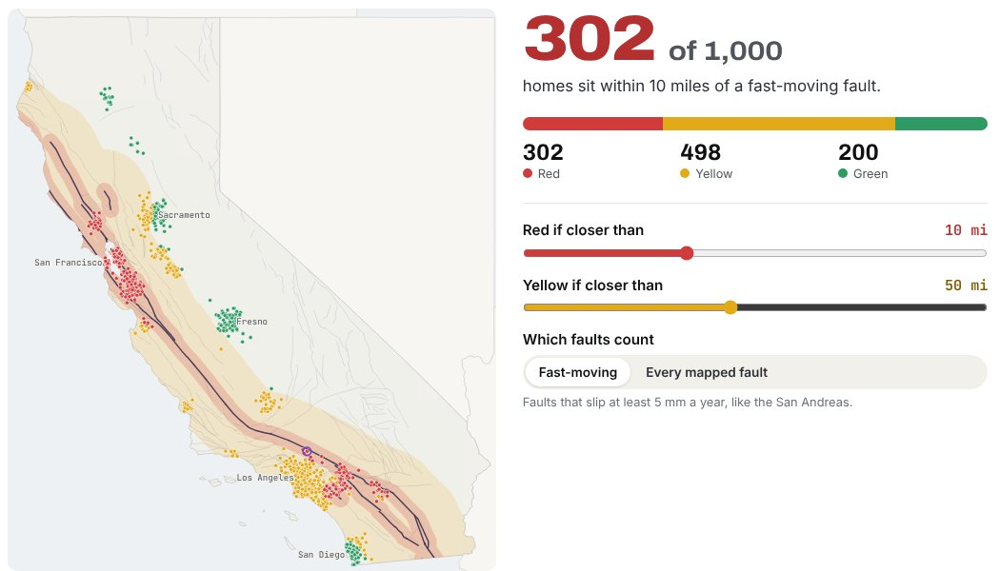
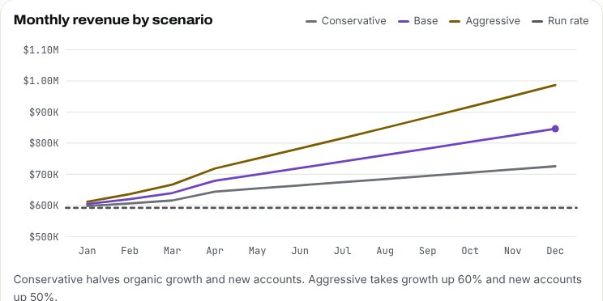
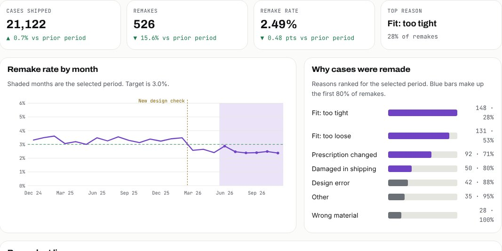

Forecasts,
data & automation.

I'm Nick, a financial and data analyst in Minneapolis. I build forecasts people actually use, and the automation that keeps them current.
Things I've built.

How close is each home to a fault line?
- The problem
- A buyer looking at a pool of California mortgages wanted to know how many homes sat near a fault line. They needed the answer by morning.
- What I built
- A tool that cleans each address, pins it on a map, measures the distance to the nearest fault and rates the home red, yellow or green.

Revenue forecast planner
- The problem
- Planning stalls when the forecast lives in one person's spreadsheet, and "do we need another printer?" gets answered too late.
- What I built
- A planner with three scenarios side by side that names the month you'd need another printer.

Quality dashboard
- The problem
- One monthly remake total hides which product and which reason are behind it.
- What I built
- A dashboard that shows the few reasons behind most remakes, and whether a new design check brought the rate down.
Job alert tool
- The problem
- Job sites re-post openings hours or days after the company does. I wanted to apply within hours.
- What I built
- A Python tool that checks company job boards every hour and only alerts me about new matches, best fit first.

Worst Vikings QBR games since 2010
- The problem
- After a rough Sunday in November I wanted to know where it ranked.
- What I built
- A ranked chart from ESPN game logs, made that same week.
Complex topics, explained with charts
How I use AI every day
The tools, Claude skills and habits behind how I work, build and learn, with the workflows laid out step by step.
Read the post →Look at the numbers, then go watch the tape
What an NBA podcast, a book on metrics and a season of standings taught me about using data without letting it fool me.
Read the post →Planning numbers, the data under them, and the automation that keeps them current
Forecasting and FP&A
Revenue forecasts, growth scenarios and capacity plans. Monthly reviews of actuals against forecast, and resetting assumptions when costs or volume move.
Data and BI
Reporting databases that join finance, sales and operations data, nightly ETL, and dashboards people actually open.
Automation and AI
Python pipelines that turn recurring reports into scheduled jobs, internal web apps, and Claude agent workflows for repeat analysis.
Things I make for myself.
Printed daily brief
A Python pipeline that prints me a personal newspaper each morning, crossword included.
Triathlon training app
Pulls my Garmin and Apple Watch data into one dashboard and plans the next workout.
Sports graphics
Charts built from game data, starting with one team. The Vikings chart above was the first.
The newspaper prints every morning. The crossword gets finished most mornings.
Analyst, builder, physics major
Most recently I was the Decision Support Analyst at Partners Dental Solutions, an orthodontic lab in Chanhassen, where I worked on revenue forecasting, capacity planning, product-mix modeling and automated reporting. I moved up from the production floor, so I know how the numbers I report get made.
Before that I spent three years as a trading analyst in capital markets at Finance of America, building loan-level bid models and DCF and IRR models. I studied physics and computer science at Augsburg University, where I built data pipelines for space physics research and co-authored a paper in the Journal of Geophysical Research.
I'm good at figuring things out. Give me a pattern or a puzzle and I'll find it, then automate it so nobody has to do it by hand again.
- Based in
- Minneapolis, MN
- Looking for
- FP&A, financial analyst, BI analyst
- Work setup
- Twin Cities or remote
- Tools
- Excel, SQL, Python, BI
- Education
- B.S. Physics & CS, Augsburg
Let's talk.
Message me on LinkedIn or copy my email. I'm always up for a conversation about forecasting, finance and automation.